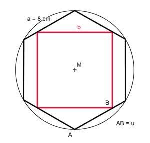
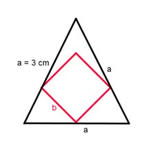
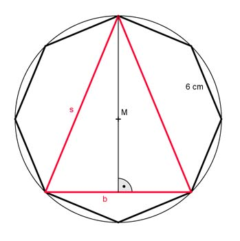
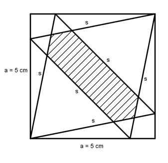
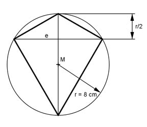
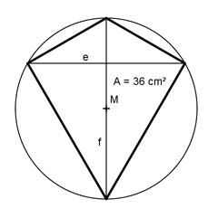

Wie löse ich Matheaufgaben?
Flächenberechnungen
Sie sehen ein gelbes Eingabefeld und die
Schalter: Prüfen und Lösung.
Tragen Sie Ihr Ergebnis ein, prüfen Sie es
oder starten Sie eine Lösung.
Aufgabe 98
Einem Kreis mit dem Radius 12 cm ist ein regelmäßiges Achteck einbeschrieben. Wie groß sind dessen Seiten, Fläche und Radius des einbeschriebenen Kreises?
Seite = cmAufgabe 99
Einem Kreis ist ein gleichseitiges Dreieck mit Seiten von 4 cm Länge einbeschrieben. Wie groß sind die Seiten eines im gleichen Kreis liegenden Sechsecks?
Aufgabe 100
Ein Quadrat mit einer Seitenlänge von 10 cm ist einem regelmäßigen Sechseck flächengleich. Wie lang ist eine Sechseckseite?
Sie ist cm lang.Aufgabe 101
Wie lang ist die Seite b des einbeschriebenen Quadrates?

Aufgabe 102
Wie lang ist die Seite b des einbeschriebenen Quadrates?

b = cmAufgabe 103
Wie lang sind die Grundseite b, ein Schenkel s und die Fläche A des einbeschriebenen Dreiecks?

Aufgabe 104
Ein regelmäßiges Sechseck mit einer Seitenlänge von 2 cm hat den gleichen Umfang wie ein regelmäßiges Achteck. Wie groß sind die Achteckseite s und die Flächen von Sechseck und Achteck?
A8 = cm²Aufgabe 105
Wie groß ist die schraffierte Fläche?

Aufgabe 106
Ein regelmäßiges Fünfeck hat einen Umfang von 15 cm. Wie groß sind eine Fünfeckseite a, die Fläche A und der Umkreisradius r? ?
a = cmAufgabe 107
Wie groß sind die Fläche A, der Umfang U und die Diagonale e des Drachens?

Aufgabe 108
Wie groß ist der Umkreisradius r des Drachens, wenn e die Diagonale f im Verhältnis 4 : 3 teilt?

r = cmzurück